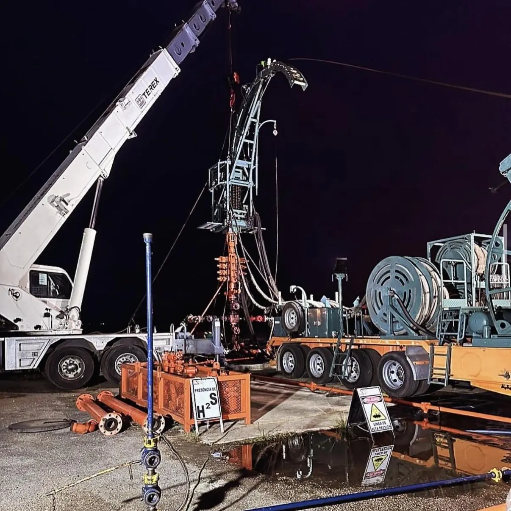
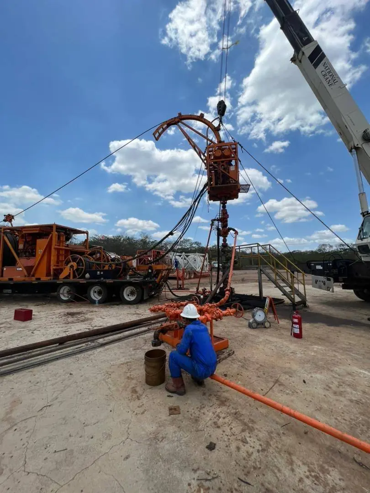
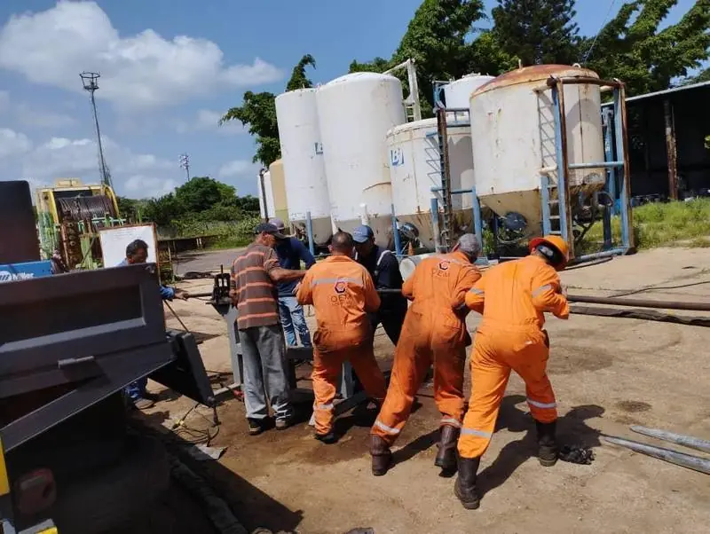

01 / CT
Coiled Tubing
Tubería continuaIntervención de pozos vivos sin taladro: limpieza, inducción con N₂, estimulación y corridas con motor de fondo.
- Tubería 1¾" · hasta 10,000 ft
- Cabina de control Jereh
- Stack BOP + stripper

Servicios a pozos petroleros y de gas con equipos propios, personal certificado y capacidad para atender hasta 3 frentes en simultáneo en el Oriente venezolano.
Intervención integral de pozos petroleros y de gas, del fondo a la superficie, con equipamiento propio y un mismo estándar de seguridad en cada locación.
Intervención de pozos vivos sin taladro: limpieza, inducción con N₂, estimulación y corridas con motor de fondo.
Pruebas de producción con choke manifold, separador y quemador para evaluar el aporte real de cada pozo.
Trabajos con pozo en producción: calibración, presiones de fondo y manejo de válvulas y tapones.
Registros eléctricos y herramientas de fondo con lectura en superficie en tiempo real.
Reacondicionamiento de pozos: sartas de producción, cabillas, cambios de BES / BCP y mudanza de taladros.
Cada hora de pozo cerrado es producción diferida. Por eso mantenemos los equipos certificados, el personal disponible y la logística resuelta antes de que llegue la llamada.
Bombas triplex de 600 HP con motores Detroit Diesel, unidad de nitrógeno de hasta 10,000 psi, grúas de 30 t, vacuums de 36,000 L y tanques de 500 bbl.
Flota propia · mantenimiento propioCapacidad para atender varias locaciones a la vez en la Cuenca Oriental, con cuadrillas completas y supervisión técnica en cada una.
Anzoátegui · Monagas · SucreRed de proveedores nacionales e internacionales que asegura repuestos, consumibles y soporte técnico sin detener la operación.
Nacional · Internacional
Un proceso claro y documentado para que el operador sepa en todo momento qué se hará, con qué equipos y bajo qué controles.
Revisamos datos del pozo: estado mecánico, presiones, fluidos y objetivo de la intervención.
Propuesta con secuencia operacional, equipos asignados, análisis de riesgos y tiempos estimados.
Equipos inspeccionados y certificados, permisos de trabajo y charla pre-operacional en sitio.
Operación con monitoreo de parámetros en tiempo real y comunicación directa con el representante del cliente.
Informe con parámetros registrados, resultados y recomendaciones para el pozo.


| Bombas triplex | 2 × 600 HP |
|---|---|
| Motorización | Detroit Diesel |
| Tanques de desplazamiento | 2 × 11 bbl |
| Unidad de nitrógeno | Stewart & Stevenson NT-181-NF |
| Presión máx. N₂ | 10,000 psi |
| Tubería continua | 1¾" · hasta 10,000 ft |
| Grúas | 2 × 30 t |
| Camiones vacuum | 2 × 36,000 L |
| Tanques en locación | 4 × 500 bbl |
| Control de pozo | Stacks BOP + strippers |

Charla pre-operacional

Operación desde cabina

Prueba nocturna con quemador

Personal en locación

Operación continua al atardecer

Motor Detroit Diesel · 600 BHP
La locación lista antes de que llegue el equipo. Un solo contratista para la intervención del pozo y la logística que la rodea.
Seguridad industrial, higiene ocupacional y ambiente para locaciones y macollas.
Monitoreo de H₂S y gases, evaluación de ruido y equipos de respiración autónoma.
Preparación de locaciones, trailers de alojamiento, baños ecológicos y cercado.
Movilización de personal y alimentación de cuadrillas en campo.
Miembros de la IADC (International Association of Drilling Contractors), referencia mundial en seguridad, formación y buenas prácticas para contratistas de perforación y servicios a pozos.
Al cerrar cada mantenimiento mayor o reparación, el equipo sale inspeccionado, probado y certificado dentro del mismo programa. Sin esperas adicionales ni una segunda movilización.
Cuéntanos el requerimiento. Nuestro equipo técnico responde con una propuesta operacional en menos de 24 horas hábiles; las emergencias se atienden de inmediato.